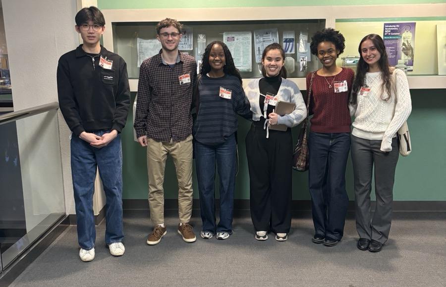
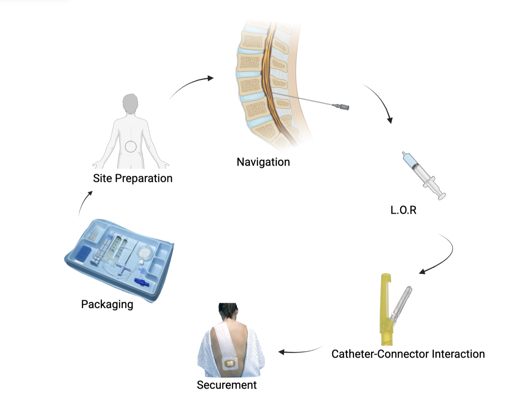

Catheter Connector: A Full Design Process with B. Braun

Starting from the System
A connector failure doesn't happen in isolation. It happens partway through a procedure, in the hands of a clinician who has just placed a needle in someone's back. So we started by mapping epidural placement end to end, as a series of linked stages:

For each stage, we wrote down what an improved kit would need to do:
- Site preparation. Make landmark identification less dependent on subjective palpation, tighten sterile workflow, and cut time-to-placement in difficult cases such as high-BMI patients.
- Navigation. Make needle and catheter advancement more predictable, reduce unintended catheter deviation, and give clinicians better feedback during insertion.
- Loss-of-resistance detection. Make confirming the epidural space less subjective, reduce false positives, and standardize technique across providers who prefer air or saline.
- Catheter–connector interaction. Reduce accidental disconnection, make engagement consistent, resist pull and injection pressure during boluses, and reduce assembly errors.
- Securement. Reduce catheter migration when the patient moves, balance fixation strength against skin integrity, and keep the hold reliable through a long labor.
- Packaging. Protect the sterile barrier through transport and storage, and lay out and label the kit so it's fast to open and hard to misuse under pressure.
Mapping the whole procedure framed the connector problem precisely. The connector is where a correctly placed catheter can still fail. It has to lock the same way every time, survive tugging and injection pressure, and be hard to attach incorrectly, all while the clinician's attention is on the patient.
Competitive and Patent Analysis
We benchmarked the current B. Braun kit against competing connector designs on how a connection is made and confirmed, how secure it is under load, and how many steps it takes. In parallel, we reviewed patents on catheter and luer-style connection mechanisms. That showed which approaches were already claimed, and where there was room to design.
Design Review
We presented the concepts in a formal design review, where we had to defend the requirements, trade-offs and risks. The feedback decided which concepts went forward.
Human Factors Study
Whether a connector is good depends on how it performs in a clinician's hands, mid-procedure, often under time pressure. To get evidence beyond our own assumptions, we designed an IRB research study with CRNAs, anesthesiologists and other medical professionals on how they handle catheter connections and what drives their decisions.
Team Process
The team ran with structured peer evaluations, which I took part in and contributed to. They kept the work balanced across six people and gave everyone regular, specific feedback.